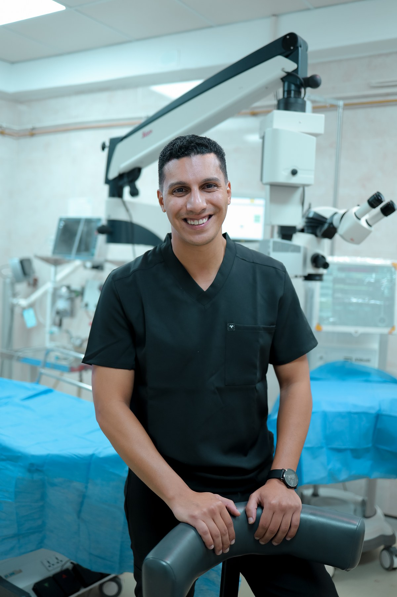
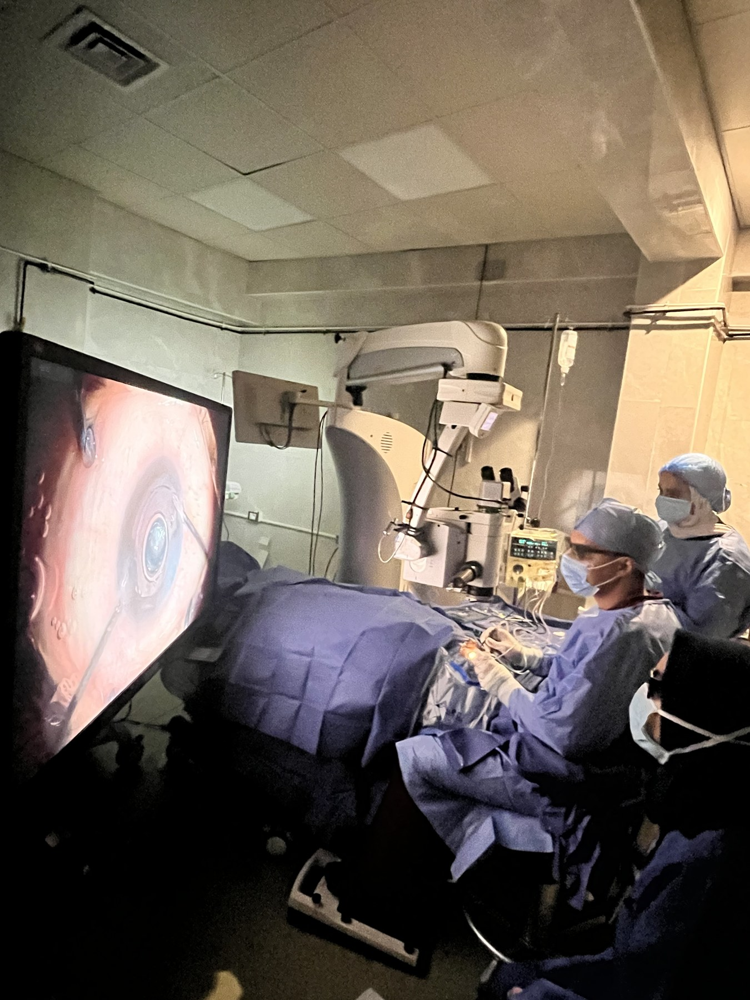
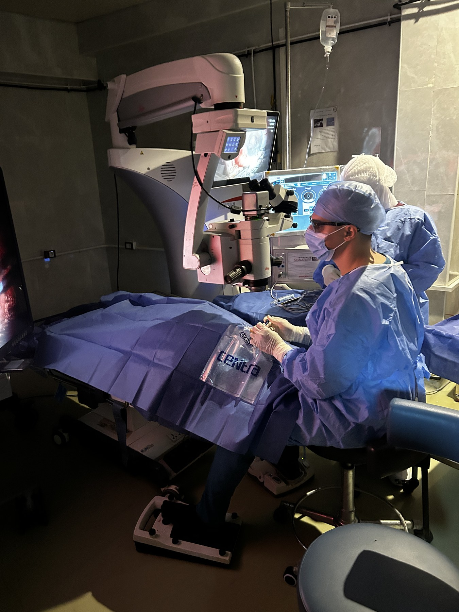
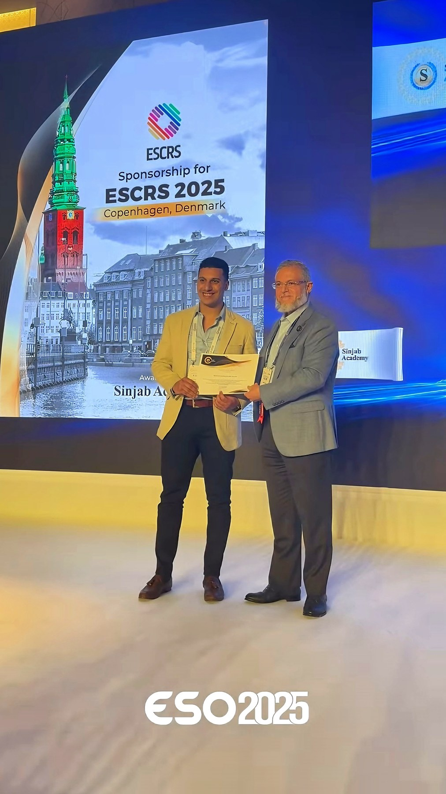
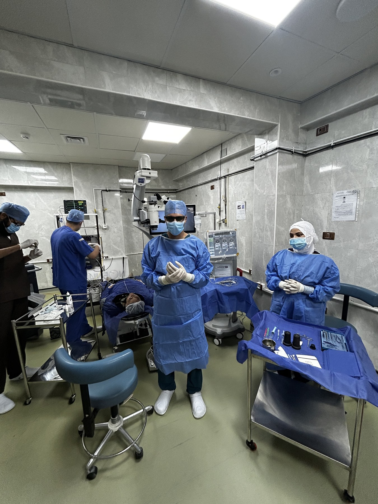
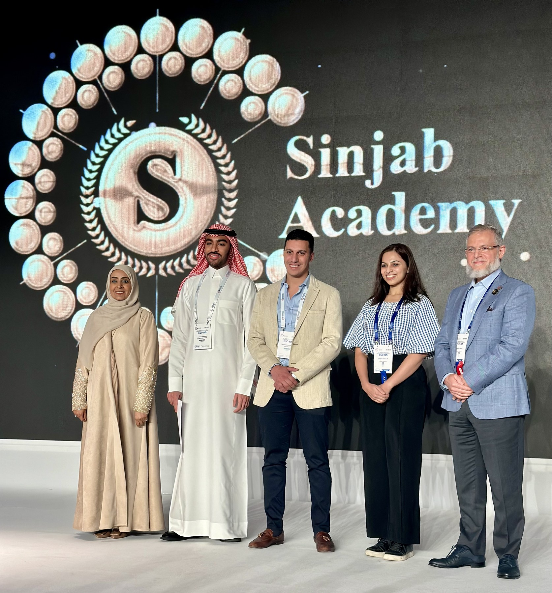
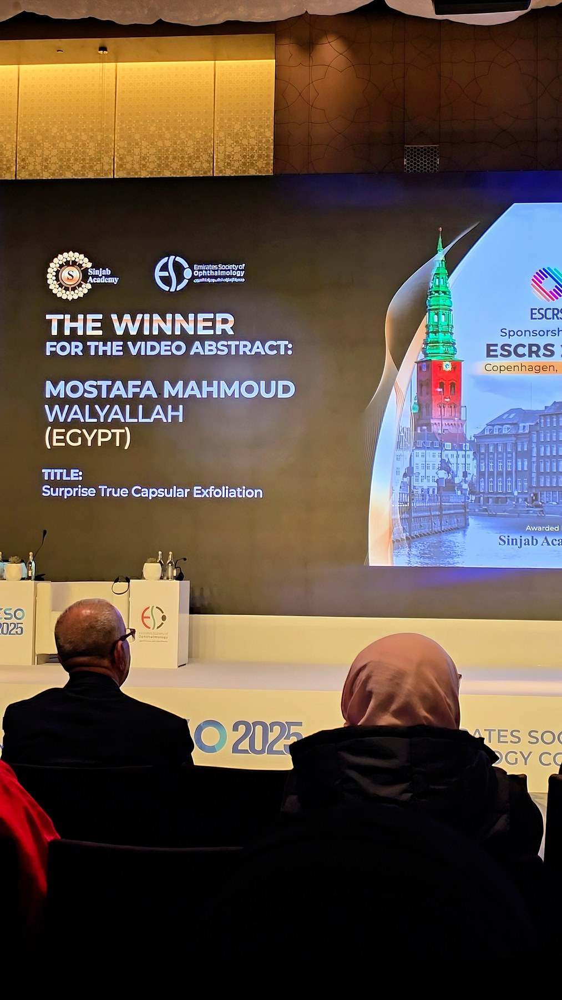
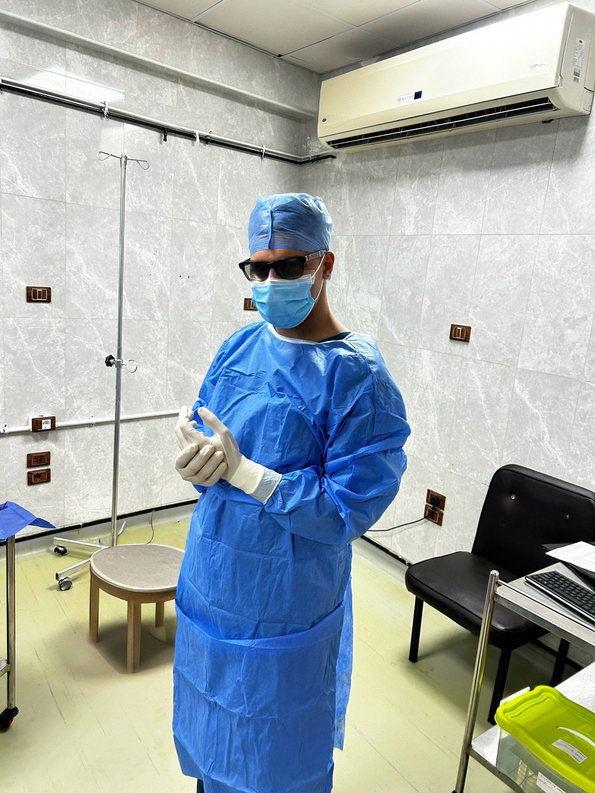

المقر الرئيسي
عيادة الإسماعيلية
- العنوان
- مركز العيون التخصصي، شارع محمد صبري مبدي، الشيخ زايد، الإسماعيلية
- المواعيد
- السبت والخميس، 7 — 11 مساءً
- يوم الجراحات
- الأربعاء (جراحات خاصة)
- الهاتف
- +20 103 161 1802
دكتور مصطفى ولي الله — زميل جراحات الشبكية والجسم الزجاجي بمستشفى الفردوس، وعضو الكلية الملكية لأطباء العيون بلندن. متخصص في جراحات المياه البيضاء المتقدمة، تصحيح الإبصار بالليزر، جراحات الشبكية، وحقن العين.

أربع خدمات أعمل عليها مباشرة. اضغط على أي منها للتفاصيل والمراجع الطبية.
جراحات الكتاراكت بأحدث تقنيات الفاكو وزرع العدسات المتطورة (مونوفوكال، توريك، متعددة البؤر)، بما فيها الحالات المعقدة.
اعرف المزيدLASIK و SMILE و PRK — حل نهائي لقصر وطول النظر والاستجماتيزم، بعد تقييم دقيق لسُمك وقوة القرنية.
اعرف المزيدعلاج انفصال الشبكية، النزيف الزجاجي، ثقب الماكيولا، واعتلال الشبكية السكري — بأحدث تقنيات vitrectomy.
اعرف المزيدعلاج التنكس البقعي المرتبط بالعمر (AMD)، الوذمة البقعية السكرية (DME)، وانسداد أوردة الشبكية (RVO).
اعرف المزيدكل خطة علاج تبدأ من فحص كامل بأجهزة حديثة، وتُعرض الخيارات عليك بوضوح قبل أي قرار جراحي. لا وعود مبالغ فيها، ولا تدخل غير ضروري.
فحص كامل بأجهزة OCT، قياس مقاسات العين، وتصوير قاع العين قبل اتخاذ أي قرار جراحي.
زمالة جراحات الشبكية والجسم الزجاجي بمستشفى الفردوس — أحد أكبر مراكز الشبكية في مصر.
اختيار نوع العدسة أو الجراحة أو الحقن بما يناسب حالتك الفردية، لا بروتوكولات جاهزة.
ومضات ضوئية، ظل في الرؤية، أو فقدان مفاجئ للإبصار — تواصل معنا فورًا لتقييم عاجل.
مواعيد متابعة واضحة بعد كل جراحة أو حقن، مع تواصل مباشر بالواتساب في حالة أي استفسار.
عيادة الإسماعيلية في موقع مركزي بالشيخ زايد، وفريق كامل بمستشفى الفردوس بالزقازيق للحالات التخصصية.

دكتور مصطفى ولي الله طبيب وأخصائي طب وجراحة العيون، تخصصه الفرعي هو جراحات الشبكية والجسم الزجاجي وجراحات المياه البيضاء.
يعمل كزميل شبكية بمستشفى الفردوس لطب وجراحة العيون بالزقازيق، ويدير قائمة الجراحات الخاصة وعيادة مسائية في مركز العيون التخصصي بالإسماعيلية أيام السبت والخميس. كما يستقبل مرضى الشبكية في عيادة بالقاهرة يوم الثلاثاء مساءً. تدرب سابقًا كطبيب مقيم في معهد بحوث طب العيون التذكاري (MIOR) بالقاهرة، وحاز على جائزة أفضل فيديو علمي بالمؤتمر الأوروبي لجراحي المياه البيضاء والإبصار (ESCRS 2025) في كوبنهاجن.
الإسماعيلية للعيادة الخاصة والجراحات، والزقازيق لجراحات الشبكية بمستشفى الفردوس، بالإضافة إلى عيادة بالقاهرة.
مختارات من جراحات الشبكية والمياه البيضاء، والمشاركات العلمية في مؤتمرات ESCRS وArab Eye Academy.








سيتم عرض تقييمات المرضى الحقيقية من ملف العيادة الرسمي على خرائط جوجل فور توفرها.
تجربة متميزة. الدكتور شرح لي خطوات العملية بالتفصيل وكانت النتيجة فوق ما توقعت.
فحص دقيق ومتابعة ممتازة بعد حقن العين. الدكتور مصطفى تعامل محترم وتشخيصه واضح.
أشعر بتحسن كبير بعد جراحة الشبكية. شكرًا للدكتور وفريق العمل على الاهتمام.
سيتم استبدال هذه العينة بتقييمات حقيقية من ملف جوجل (GBP) بمجرد تجميع 5 تقييمات أو أكثر.
أخصائي طب وجراحة العيون وزميل جراحات الشبكية والجسم الزجاجي. يتخصص في جراحات المياه البيضاء المتقدمة والمعقدة، تصحيح الإبصار بالليزر (LASIK/SMILE/PRK)، جراحات الشبكية، وحقن العين.
العيادة الخاصة داخل مركز العيون التخصصي بشارع محمد صبري مبدي، الشيخ زايد، الإسماعيلية. المواعيد يومي السبت والخميس من 7 مساءً حتى 11 مساءً.
نعم. يمكنك التواصل عبر الواتساب مباشرة على الرقم +20 103 161 1802 لحجز موعد أو الاستفسار عن خدمة معينة.
العيادة تقبل الدفع النقدي. ولأي متطلبات أخرى، يُفضل التواصل المسبق لتأكيد الترتيبات.
تتم جراحات المياه البيضاء وقائمة الجراحات الخاصة يوم الأربعاء في مركز العيون التخصصي بالإسماعيلية. جراحات الشبكية التخصصية تتم في مستشفى الفردوس بالزقازيق.
يجب التوجه لطبيب عيون فوراً عند ظهور ومضات ضوئية، أجسام عائمة كثيرة ومفاجئة، ظل أو ستار في مجال الرؤية، أو فقدان مفاجئ للإبصار — هذه قد تكون علامات انفصال الشبكية.
عيادة الإسماعيلية: السبت والخميس 7 — 11 مساءً. عيادة القاهرة: الثلاثاء 8 مساءً. رسالة واتساب واحدة تكفي.